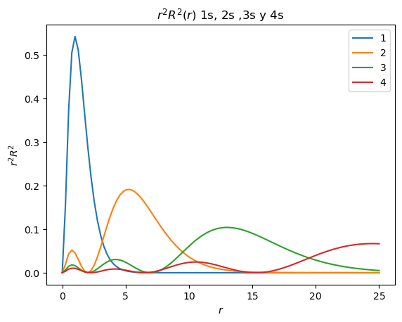
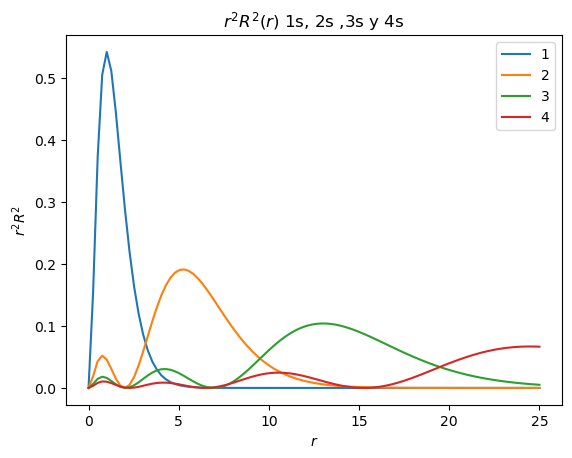

Solución Radial
Contents
11. Solución Radial#
El sistema consta de un electrón y un núcleo (protón) con una interacción inversamente proporcional a la distancia entre ellos.
El Hamiltoniano de este sistema contiene la energía cinética del electrón, la energía cinética del núcleo y la interacción coulómbica núcleo-electrón.
La ecuación de Schrödinger a resolver es
Inserto matemático: Cambio a sistema de masa reducida
El problema se puede simplificar al utilizar coordenadas de masa reducida. La masa reducida tiene masa \(\mu\) y coordenadas \(r\), el centro de masa tiene masa \(m_T\) y coordenadas \(R_{\rm cm}\). Para ver como hacer este cambio, vea Rotor Rígido.
La nueva ecuación de Schrödinger es
La eigenfunción \(\Psi\) de la ecuación anterior depende de las coordenadas del centro de masa, \(R_{\rm cm}\) y de las coordenadas de la masa reducida, \(r\). Se propone una solución por separación de variables, tal que \(\Psi(R,r) = \Phi(R_{\rm cm}) \psi(r)\). Al sustituir en la ecuación de Schrodinger se obtienen 2 ecuaciones
La primera ecuación corresponde al movimiento de una partícula libre.
Para resolver la segunda ecuación cambiamos a coordenadas esféricas, recordando que (vea Partícula en la esfera)
Entonces
Inserto matemático: Separación de variables
Se propone que la eigenfunción \(\psi\) puede ser separada en una parte radial y una parte angular, es decir
Esto genera una ecuación a resolver para la parte radial (y una para la parte angular que trataremos posteriormente)
Las soluciones a la ecuación radial son
aquí han surgido los números cuánticos
\(N_{n,l}\) toma la forma
\(L_{n+l}^{2l+1}\) son los polinomios asociados de Laguerre
Inserto matemático: Polinomios de Laguerre
Importe las siguientes librerías
pyplot de matplotlib
numpy
derivative de scipy.misc
laguerre de scipy.special
# Librerías
from matplotlib import pyplot as plt
import numpy as np
from scipy.misc import derivative
from scipy.special import laguerre
Defina una función que reciba valores de \(n\) y \(l\) y regresen la función \(R(r)\)
# def R(r)
def R_func(r,n,l):
N = (2/(n*a0))**(3/2)*np.sqrt((np.math.factorial(n-l-1))/(2*n*((np.math.factorial(n+l)))**3))
L = laguerre(n+l)
L = L/np.abs(L[n+l])
assoc_L = derivative(L,2*r/(n*a0),n=2*l+1,order=2*l+3)
R = -N*(2*r/(n*a0))**l*np.exp(-r/(n*a0))*assoc_L
return R
Grafique el cuadrado de la función de densidad de probabilidad del orbital 1s, \(R^2_{n=1,l=0}\), y su función de distribución radial \(r^2R^2_{n=1,l=0}\)
# Gráfica
r=np.linspace(0,25,100)
a0=1.0
n = 1
l = 0
R = R_func(r,n,l)
plt.plot(r,R**2,label=n)
plt.xlabel("$r$")
plt.ylabel("$R^2$")
plt.title("Función de densidad de probabilidad")
plt.show()
plt.plot(r,4*np.pi*r**2*R**2,label=n)
plt.xlabel("$r$")
plt.ylabel("$r^2R^2$")
plt.title("Función de distribución radial")
plt.show()


Realice la gráfica de \(R^2(r)\) (el cuadrado de la parte radial de la eigenfunción) para los orbitales 1s (\(n=1\), \(l=0\)),2s (\(n=2\), \(l=0\)),3s (\(n=3\), \(l=0\)) y 4s (\(n=4\), \(l=0\)), y de \(r^2R^2\).
# Gráfica
#Cambiar aqui para ajustar limites del eje X
r=np.linspace(0,25,100)
#Cambiar aqui para usar s,p,d,etc
l=0
#Cambiar aquí para elegir limites de los numeros cuanticos n
n_min=1
n_max=4
for n in range(n_min,n_max+1):
R = R_func(r,n,l)
plt.plot(r,R**2,label=n)
plt.legend()
#Cambiar aqui los titulos de los ejes
plt.xlabel("$r$")
plt.ylabel("$R^2$")
plt.title("$R^2(r)$ 1s, 2s ,3s y 4s")
plt.show()
for n in range(n_min,n_max+1):
R = R_func(r,n,l)
plt.plot(r,r**2*R**2,label=n)
plt.legend()
#Cambiar aqui los titulos de los ejes
plt.xlabel("$r$")
plt.ylabel("$r^2R^2$")
plt.title("$r^2R^2(r)$ 1s, 2s ,3s y 4s")
plt.show()
 

Pregunta
¿Cuántos máximos tiene el cuadrado de la parte radial del orbital 1s?
Mostrar respuesta
Diverge en cero
La parte radial de la eigenfunción es \(R_{n=1,l=0}^2(r)\).
Pregunta
¿Cuántos máximos tiene el cuadrado de la parte radial del orbital 2s?
Mostrar respuesta
Diverge en cero
La parte radial de la eigenfunción es \(R_{n=2,l=0}^2(r)\).
Pregunta
¿Cuántos máximos tiene el cuadrado de la parte radial del orbital 3s?
Mostrar respuesta
Diverge en cero
La parte radial de la eigenfunción es \(R_{n=3,l=0}^2(r)\).
Pregunta
¿Cuántos máximos tiene el cuadrado de la función de distribución radial del orbital 1s?
Mostrar respuesta
Uno
La función de distribución radial de la eigenfunción es \(r^2 R_{n=1,l=0}^2(r)\).
Pregunta
¿Cuántos máximos tiene el cuadrado de la función de distribución radial del orbital 2s?
Mostrar respuesta
Dos
La función de distribución radial de la eigenfunción es \(r^2 R_{n=2,l=0}^2(r)\).
Pregunta
¿Cuántos máximos tiene el cuadrado de la función de distribución radial del orbital 3s?
Mostrar respuesta
Tres
La función de distribución radial de la eigenfunción es \(r^2 R_{n=3,l=0}^2(r)\).
Pregunta
¿Encuentra algún patrón entre el número de máximos de la función de distribución radial con el número cuántico \(n\) del orbital?
Realice la gráfica del cuadrado de la parte radial de la eigenfunción para los orbitales 3s (\(n=3\), \(l=0\)),3p (\(n=3\), \(l=1\)) y 3d (\(n=3\), \(l=2\)), y de \(r^2R^2\).
# Gráfica
#Cambiar aqui para ajustar eje X
r=np.linspace(0,25,100)
a0=1.0
#Cambiar aqui para elegir n
n=3
#Cambiar aquí para elegir numeros cuanticos l
lmin=0
lmax=2
for l in range(lmin,lmax+1):
R = R_func(r,n,l)
plt.plot(r,R**2,label=l)
plt.legend()
#Cambiar aqui los titulos de los ejes
plt.xlabel("$r$")
plt.ylabel("$R$")
plt.title("$R^2(r)$ 3s, 3p ,3d")
plt.show()
for l in range(lmin,lmax+1):
R = R_func(r,n,l)
plt.plot(r,4*np.pi*r**2.0*R**2.0,label=l)
plt.legend()
#Cambiar aqui los titulos de los ejes
plt.xlabel("$r$")
plt.ylabel("$r^2R^2$")
plt.title("$r^2R^2$ 3s, 3p ,3d")
plt.show()

Pregunta
¿Cuál de los orbitales (3s/3p/3d) tiene el máximo del cuadrado de la parte radial más cerca del origen? Es decir, ¿Cuál de estos orbitales (3s/3p/3d) es más penetrante?
Mostrar respuesta
3s
El cuadrado de la parte radial del 3s diverge en cero. Note que el máximo de la función de distribución radial de 3d es más cercano al origen.
11.1. Referencias#
P. W. Atkins, y R. Friedman, Molecular Quantum Mechanics (Oxford University Press, 2005).
F.L. Pilar, Elementary Quantum Chemistry (Dover ed., 2001).
I.N. Levine, D.H. Busch, y H. Shull, Quantum chemistry (Pearson Prentice Hall Upper Saddle River, NJ, 2009).
D.A. McQuarrie y J.D. Simon, Physical Chemistry: A Molecular Approach (University Science Books, 1997).